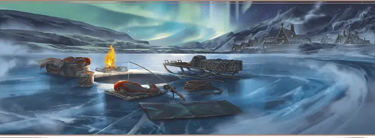

Подлёдный рыболов
Ice Fisher

Характеристики Сила, Ловкость, Телосложение
Черта Бдительный
Навыки Атлетика, Обращение с животными
Инструменты Инструменты резчика по дереву
Снаряжение Выберите А или Б: (А) Инструменты резчика по дереву, Корзина, Блок и лебёдка, Ведро, Цепь, Охотничий капкан, Сеть, Шест, Рационы на 3 дня, Верёвка, Дорожная одежда и 32 ЗМ; или (Б) 50 ЗМ
Вы происходите из гордого рода рыбаков Десяти городов, что в Долине ледяного ветра. Ловля тупоголовой форели — честная работа, хотя и не самая почётная на Севере. Вы можете почувствовать малейшее движение лески, вы вытаскивали громадную рыбу из-подо льда руками, и вы выпотрошили столько форели, что хватило бы на целую деревню на много дней. Эта жизнь подготовила ваши тело и разум к жизни приключений.